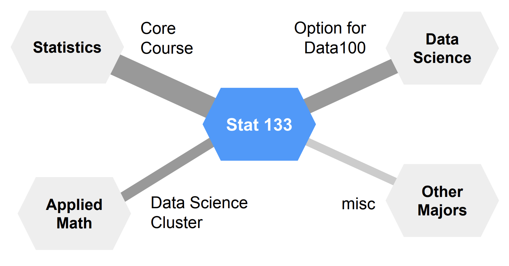
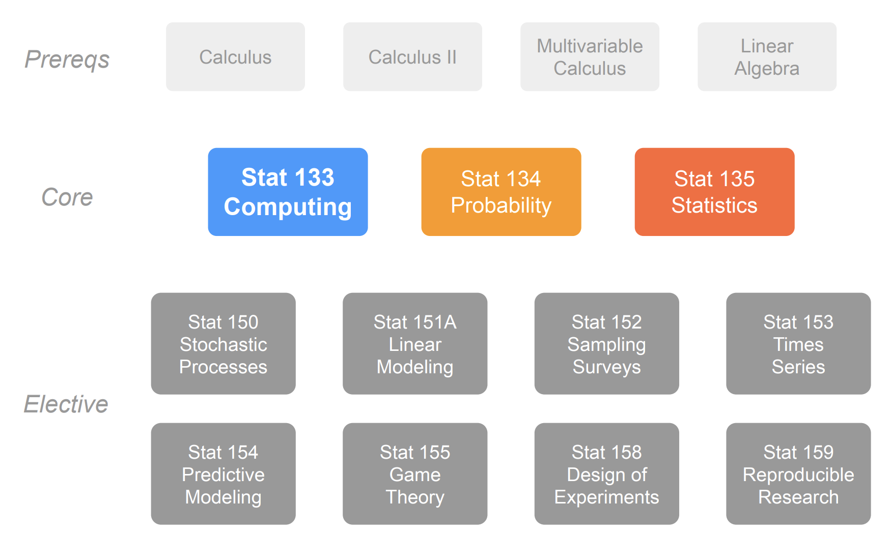
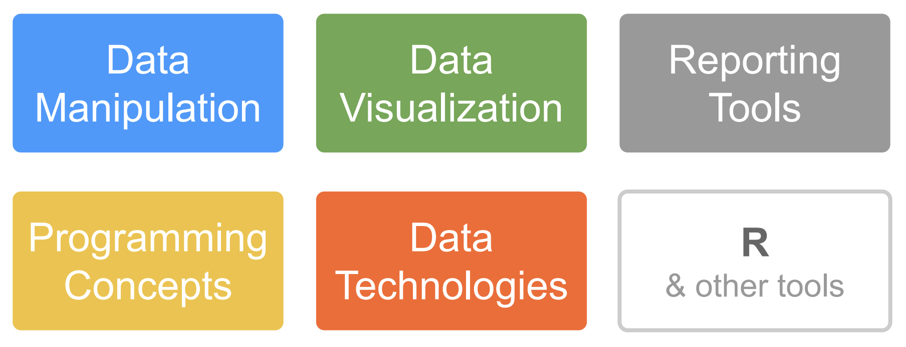

Data on Trees
Structuring and Navigating File Paths
Welcome to STAT 133!
We will begin at ten past. By that time, please
- silence phones and put into your bag
- close and stow your laptops
Making Data
On one side of your card write answers to the following questions (borrow a pen from a neighbor if needed):
- What is your lab number? (integer)
- How many years have you been at Cal? (integer)
- Are you a Statistics major? (true / false)
On the other side of the card write answers to the following questions:
- What was your “song of the summer”? (character string)
- What is the farthest that you were from Cal this summer in miles? (numeric)
With the people around you…
Take a few minutes to share your name and the answers to the questions that you wrote down.
03:00
What this class is about
- 1998 Oregon 1st state to conduct elections by mail.
- Voters mailed a ballot a month before.
- They return it at their leisure.
What are the dynamics of this form of voting?
What is “turnout” over time?
Analysis workflow
- Access and store data
- Perform Optical Character Recognition (OCR): PDF > .xls, .csv
What is “turnout” over time?
Boardwork
What is “turnout” over time?
Analysis workflow
- Access and store data
- Perform Optical Character Recognition (OCR): PDF > .xls, .csv
- Isolate data from Deschutes County
- Convert day from words to numbers
- Create new column of cumulative returns
- Create line plot
Boardwork
How this class works
Who takes it
Statistics major
Cornerstones
Lecture
- Stow laptops and phones
- I’ll do mix of slides and boardwork
- Take handwritten notes (paper or tablet)
Lab
- A mix of new ideas, practice, and working on lab assignments.
- Every other week you take a quiz in lab.
Assignment types
- 5% Problem Sets (credit / no credit): Small practice problems
- 25% Labs (credit / no credit): Explorations of real data and computing workflows
- 50% Quizzes: Every two weeks in lab
- 30% Final Exam: Wednesday of finals week 7 - 10 pm
About those quizzes
- Asks questions similar to previous problem sets and labs
- Roughly 45 minutes to take a paper-and-pencil quiz individually
- Roughly 25 minutes to take a very similar quiz in a group
- Your grade is the average of the two
Data as Trees
For lab tomorrow
- Bring a laptop! (no need to install anything)